DiTraR：用互补评分器与字幕核验检索视频片段
DiTraR 的原题为 DiTraR: Diverse Scorers and Transcript-Guided Re-ranking for Video Corpus Moment Retrieval。一作 Mohammad Alijanpour Shalmani 与 Alale Rezvani Boroujeni 来自中佛罗里达大学，Ali Amini 来自考纳斯理工大学。这是一篇结合跨视频片段检索、独立评分器集成与冻结语言模型核验的预印本，arXiv v1 于 2026 年 11 月 20 日 UTC 提交，11 月 23 日进入公开列表。本轮未核验到独立代码。 arXiv:2611.27931
视频库片段检索要求同时找对视频与发生事件的时间区间。一个强评分器的大部分首位错误来自选错视频，重新加权评分器已经使用的证据也未能修复这些错误。
1. 背景和问题
1.1 判对视频和判对时刻
视频库里的记录通常是未裁剪视频。用户用自然语言描述一段具体事件，系统返回的是视频及该事件的起止时间。一个命中的视频需要坐标可定位，一组精确的时间坐标也必须属于正确的源视频。比如针对某个人穿黑西服关门的描述，场景要素相同的多个片段可能来自同一个系列，门和服装也可能在特定动作发生前后一直存在。哪个人物、哪次关门和查询中关注的时间点，需要在一个共同的候选上落实。视频包含黑西服和独立出现的关门镜头，最多是两个弱线索，拼到同一时间位置时可能失真。若候选已经被先验视频粗排截掉，即使后续定位器学到了精确的动作边界，该事件也不会返回。
这一设定与两种常见评估的差别直接关系到模型排序。视频级检索看匹配的视频出现与否，不追问返回时间附近有没有对应事件。给定视频的定位看时间坐标，不考察这个视频能不能战胜库中其他视频。视频库片段检索把两层放进同一个判定条件。常见路线在全库计算轻量视频分数，再对少量视频做查询相关的多模态融合和区间打分。好处是重模型只读极少输入，代价是前后阶段对证据的定义可能不同。检索分偏向熟悉角色、地点和固定场景时，细小动作或跨句条件往往对每路打分都很重要，却可能在第一层就被粗粒度表征压低。
TVR 把这种风险放大。六部电视剧大量复用人物、服装、场景与表达方式，每条自然语言查询可能描述动作、对白，或同时包含两者。字幕带时间戳和说话人，给了一条可以离线编码的对齐信号。但同一个名字可能在连续几句话里出现，单句相似度很难跟踪谁向谁递东西，或从前后关系明确动作和人物。作者从全查询与可解释短语两层着手。完整查询保留自然组合语义，短探针突出具体实体和事件，二者共享同一候选区间。前置事件、主要事件和后置事件可以借共同的区间锚点读相邻窗，因而不会把严格的「同时出现」错误理解成动作顺序。电影镜头切换时，服装与动作可能在不同帧，先圈一个局部候选也比逐帧同时命中更合适。
全库一致的区间分数有一个额外的诊断价值。传统两阶段链路通常在候选呈现之后才看到时间定位的误差，很难判断遗失是源于粗排还是区间分被压低。本文从同一个能量读每个视频的最佳片段，并在实验里统计首位是否来自真视频，再条件化看这个首位区间是否过时间阈值。验证集基线的首位正确视频率为 42.47%，首位片段在 IoU 0.5 下的真正命中率为 20.23%，两者相除是约 47.6%。对同一个首位结果，可以出错在视频身份，也可以在身份正确的前提下出错在起止时间。按全体查询计，前一种错误更常见，但所剩空间还要结合固定视频后的理想定位器观察。这种拆法比笼统说多模态模型更准更能指导投入，尤其当加入新的能力会直接改变延迟预算时。
1.2 两种新增证据分别覆盖哪类错误
作者考察两个视频选择干预。第一个在相同语料、相同区间格点和相同训练目标上独立训练评分器。有的使用带角色类型和时序先验的解析，有的只读普通动词三元组和名词块，有的仅看整句，再把候选区间的能量合并。几种表示可能分别误读同一个查询，因此聚合看规模较低的共识能否超过单路强模型。论文把随机种子不同的一路也纳入设计，对比相同分解的独立训练与分解本身的变化。这一点重要，因为即使普通解析的一组结果更强，数据也未必支持把全部提升归因于更聪明的语法规则。
第二个干预读取完整字幕，让一个冻结的大语言模型回答候选视频中是否出现描述的事件。它拥有跨多条字幕推断指代、对话关系和同义情景的接口，输入仍局限于文字。输出是视频级的证据增量，同一视频的所有候选片段遵循同样的偏移量，局部边界沿用检索器。加入这一项主要希望让原来已有候选里证据更全的视频向前移动。从工程角度，文本核验把较重的工作推迟到一小批有竞争力的视频，再通过按视频汇聚查询复用转录。但即使语言模型能理解对白，在候选生成阶段缺失的目标仍无从核验。模型可能对常见台词表示高度确信，也可能只因视频中相关角色同框就回答肯定。这些情况要求把输出看成补充证据并结合原评分，且用视觉查询的独立分层检验它有没有实际贡献。
第三条路线是给原有片段特征施加人工打分规则。动作显著性、前后对比和对白切换在实现上更轻，但它们操作的是评分器已经看过的表示，无法把跨句推理或其他独立模型的训练视角带回来。本文在开发集先定规则，再在另一留出集对比四类重新评分。对失败的解释需要收得很窄。单个预训练特征组合、特定时间分辨率和特定重排候选无法支撑对所有轻量规则的否定。作者能检验的是四个已报告规则在这套验证协议下没有稳定增加首位命中。
研究问题由此能拆成三个连续检查。第一是切分证据后让它围绕共同区间，能否保留实体识别又减少跨片段拼错。第二是跨视频可比的能量是否能在多个独立成员之间低代价聚合，以及这种聚合能否引入新的高分候选。第三是完整字幕能否在现有前列候选里补上对话信息，以及它是否愿意为视觉轮廓留下原评分的区分度。第一步改变检索分的定义，第二步改变候选集可能进入的片段，第三步主要改变集合里的顺序。三步的因果责任不同，所以后面的主结果、固定候选消融和条件定位率要一起读，单条总召回无法指出哪个环节有实际作用。
2. 方法
2.1 语料表征与区间格点
离线将视频切为 1.5 秒片段。视觉向量由时间编码器融合 CLIP、ResNet、SlowFast 特征，重叠字幕行走冻结句向量，讲话者名字另外编码。无对白片段使用学习得到的无语音字幕向量，讲话者通道置零。边界回归读取三路融合的表示。时间格点允许从每个合法起点枚举二十八种长度，一至十六个片段保留所有整数长度，此后逐渐稀疏，最长一百三十六片段即二百零四秒。格点在官方验证集中对 98.5% 和 89.7% 的查询分别覆盖至少一个 IoU 达 0.5 和 0.7 的候选。这个统计只描述回归前网格能否承载标注附近的区间，观测到的检索分还取决于视频竞争、排名和边界细化。
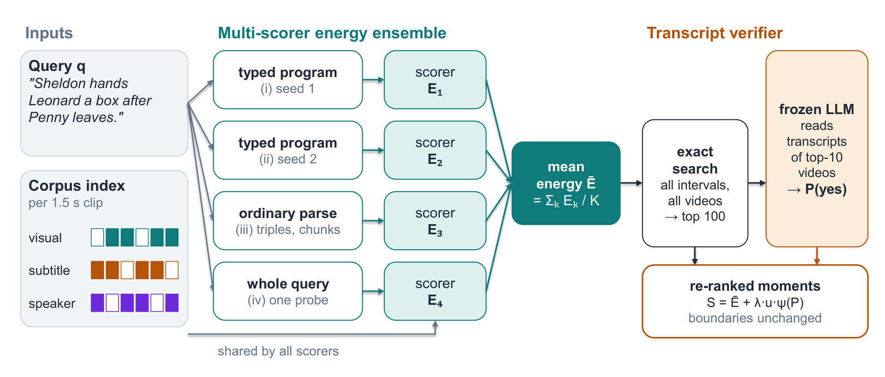
Figure 1 的左端展示查询与每隔一点五秒预先保存的三种索引，表示四个评分器从同一语料拿共同的底层输入。中间两条同种类型程序采用不同种子，第三条简单解析读三元组与短语，第四条只用整个查询，针对同一视频和同一格点各输出一个可比较的数。取均值之后才执行一次完整搜索，不能把图中四个数读成四份候选排名的投票，或把前百个片段来自不同成员的并集误当成实现。右侧语言模型独立读取有竞争力的视频字幕，生成二元置信度。在图示中右支简记为前十视频，实际候选是单成员与集成各自前十个不同视频的并集。核验之后，同一视频多个片段的分数同时平移，视频间相对顺序和该视频首位片段是否最终返回都可能变化，而同一个视频内原有排序和边界沿用。图示串联的是固定候选上的证据复核，不包含语言模型自生成一个时刻再将其追加到列表。这个边界也指明了两类成本分别落在哪里，四路训练均要更新评分器，线上式回放的语言模型前向集中在少量独特视频，但每次需要转录上下文。真视频在全库打分后若没有留存可用片段，右侧再强也无法创造新的正确候选。对同一模型做复现时，需要记录检索格点和进入核验的视频数，同时保留验证前后的同一片段集合，以免把边界回归、选片和核验三种收益合并归因。场景里被共享的是片段底层特征，四路各自的查询表征和能量函数仍需要计算，这也是一轮搜索不能等价成一路模型开销的原因。
2.2 共同区间的见证评分
默认句法分解保留整句，再产生至多八个短探针，使用依存解析、论元指代还原以及时间连词建立类型与位置先验。疑似否定探针和转述语音的视觉通道由结构掩码控制。每个短语在视觉、字幕或说话人通道各自进入微调文本塔，和离线片段向量取余弦相似度。门控决定读哪个通道，布局则决定该通道看哪段时间。探针可用同一个收束到活跃事件的窗口来参与竞争，学习信号来自检索目标，未提供逐探针时间位置或门控监督。
符号解释： $a$ 是查询 $q$ 的探针，$m$ 是模态通道，$\mu_{a,m}$ 表示允许读取该通道的结构掩码，$\pi_m$ 与 $\pi_\rho$ 由短语类型决定，$h_\gamma$ 与 $h_\rho$ 是利用探针和整句上下文产生修正的网络。$\gamma_{a,m}$ 对通道取权，$\rho_{a,m,\cdot}$ 在区间内、之前、之后与全视频四类布局间分配概率。通道参与度可同时较高，布局概率则在可替代的读法间竞争。
符号解释： $I=[s,e]$ 是视频 $v$ 中的候选时间区间，$r$ 是布局类别，$W_r(I)$ 是由该布局得到的片段集合，$\sigma_m$ 是短语与视频片段 $t$ 的通道余弦相似度，$\beta_m$ 控制对高分片段的集中程度，$\omega_{a,m}$ 是该通道对探针的局部支持。前后窗各读紧邻的四个片段，指数和先按窗长取平均，布局混合保留在对数内。把布局全部压到全视频时，这一项不再随区间改变，作者将其对应到视频级后交互。
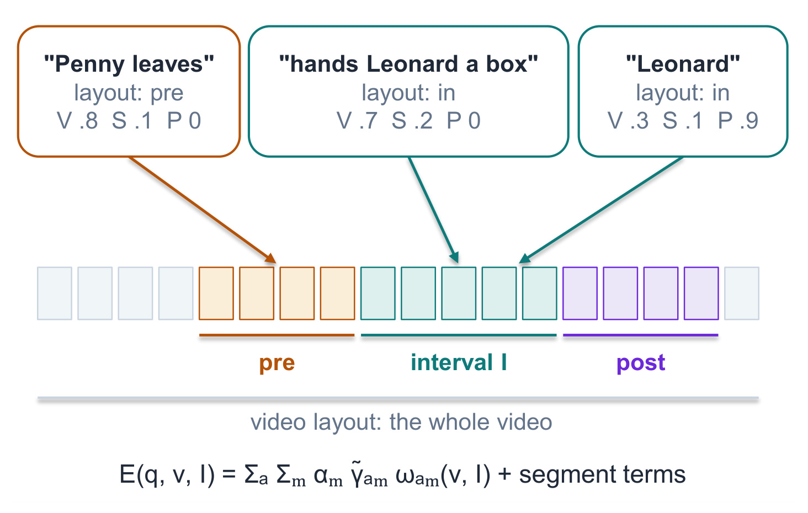
Figure 2 上方三张卡分别是离场、交盒子和人物身份。第一张的箭头落到前窗，因为查询允许离场先于要找的主要动作。第二张指向候选内部，动作需要该段附近有画面证据。第三张同样指向内部但说话者通道的展示权重更高，反映该示例的人物身份有机会由带时间的发言标签提供。下方最长的全视频条允许场景等持续证据提供背景。各卡内的 V、S、P 分别是视觉、字幕、说话人参与的示例权重，图中数值只帮助读懂信号路由，不能当成真实模型对该样本的统计，也不能用来判断调查语料里的门控校准。约束落在共享候选锚点上，允许证据出现在它附近的不同时间窗；任何一个局部线索单独很强仍需经过其他探针与区间相关项一起比较。几个不同查询片段在场景中散落时，模型能把一个已排序的位置作为解释入口，但它并未执行硬逻辑合取。底部能量里的多项求和意味着某一路很强时仍可能补偿另一路缺乏证据，全视频布局也保留了全局捷径。因此实验应该专门测试部分满足的干扰项、同事件不同时点及字幕对齐漂移。图中的一点五秒网格还隐含时间粒度问题，先后动作压在同一片段时，邻接窗口和加权聚合仍无法分离这一帧向量里藏起来的动作顺序。对于非常短的对白转接或连续动作，后续直接比较时间特征分辨率会比一味提高门控权重更有针对性。只看某个角色是否出现的请求又可能偏好全视频窗，因此将所有查询硬限制在区间内部同样会损失有用的上下文。
符号解释： $D(q)$ 是整句及其短探针集合，$\mathcal M$ 是三通道集合，$\alpha_m$ 是通道系数，$\tilde\gamma_{a,m}$ 是受该通道预算 $B_m$ 限制的门控，$a'$ 枚举同查询探针。$\phi_q$ 是查询对片段的相关性 logit，$p_q^s$、$p_q^e$ 是用相似度曲线卷积得到的视频内起点与终点分布，$\lambda_q$ 是查询相关的长度先验系数。原始门控总和不超过预算时保持原值，过量则等比例缩小。连续短语经常描述相近事实，因此预算在评分里保留各探针相对重要性，同时减少分解越碎就天然累积分越高的偏差。
符号解释： $\theta$ 是单路评分器参数，$\mathcal B$ 为一批六十四个不同视频，$\Lambda_{v'}$ 是一个视频的可枚举区间，$\mathcal P_q$ 是与标注 IoU 至少为 0.7 的真视频区间集合，空集时取该真视频最佳格点。训练提高全体合格正区间的总质量，额外加权 0.5 的片段到查询对称项、边界回归的平滑绝对误差及逐片段辅助项。批内约四分之三的视频来自同一剧集系列，角色与场景相同的候选具有较高辨别难度。跨视频的共同归一化把区间定位与选视频的得分在同一尺度训练。
搜索把式三窗内指数和与式四的逐片段相关性和变成前缀和之差，单视频花费与探针数、模态数、片段数和允许的不同长度数之积同阶。所谓精确指每个预定义候选的能量都计算到，随后每视频仅保留前二十区间，全库前六百进边界回归，用 IoU 0.7 的时间非极大值抑制收成前百。这个流程仍受离散格点、预算和截断约束。相邻强帧可以共用部分计算且不需要外部视频粗排，候选数仍随库体量和视频时长增加，不能把前缀和理解为库规模无关的搜索。
2.3 多评分器的能量集成
符号解释： $K$ 为独立成员数，$E_k$ 是第 $k$ 路在同一视频和区间上的能量，$p_k$ 是该成员对同一格点全集归一化后的分布。归一化常数对该查询的候选名次没有影响，所以平均能量相当于对成员概率求几何平均再归一化。它鼓励多路共同支持的候选，某路的低确信会相对压低仅被其他路推高的孤立误报。强能量仍可补偿弱能量，公式本身不提供绝对一致性保证。
四路成员沿用共同训练目标、数据和格点，作者以统一训练目标作为能量同尺度的工程前提，用等权聚合，并平均各成员预测的边界偏移。前两路是带类型与掩码的探针程序，只改变随机种子。第三路保留依存解析读取主谓宾三元组与名词块，取消先验、共指还原和结构掩码。第四路只有全查询探针。聚合改变候选进入集合的资格，训练成本则近似相加。四个成员并非一次训练得到的多个输出头，因此复现需验证输入相同和种子独立两项。表四中有一条较弱的整句路线对集成仍有增益，说明至少个别失败样本可以从不同视角互相纠正。
2.4 完整字幕核验
单成员与集成分别取前十个不同视频，合并作为每个查询的候选集。脚本包含视频时长和带时间戳及说话人的全字幕。冻结的 Qwen3.5-27B 用正则限制贪心输出一行二元判断和起止位置，每次按一个视频合并至多八条查询，通过共享同一转录摊薄重复阅读。仅取决策位置 yes 与 no 两个词的相对概率，生成的起止位置没有进入输出排名。
符号解释： $p_{q,v}$ 是针对查询 $q$ 和视频 $v$ 的两选置信度，$\ell_{\rm yes}$、$\ell_{\rm no}$ 是模型在判决位置给出的两项词级对数概率。这里从词空间选两项后重新归一化，未做新的监督校准，不能把 0.8 的输出直接当长期八成精确的业务概率。
符号解释： $C_q$ 是两组前十视频并集，$S$ 为最终名次分，$u$ 取每个查询最高排名视频内保留区间能量标准差的跨查询中位数，用作无需标签的尺度，$\lambda$ 为开发集选择的核验强度。$c$ 截断词级对数几率，避免少数极端置信度无限超过能量差。并集外的已返回片段统一取最低核验值；它们仍留在前百集合中。$u$ 沿用候选分差的量级，因此同样的 $\lambda$ 在不同网格、分数温度或线上隔离条件下未必能直接搬用。普通用户上传视频的字幕缺失与剧集脚本差异会进一步改变这种分值匹配。
3. 实验结果
3.1 TVR 切分与比较尺度
TVR 全集约十万九千条查询、二万一千八百段视频，覆盖六部电视剧。训练集有 87,175 条查询和 17,435 段视频。官方验证 10,895 条查询、2,179 段视频，私有测试标注不可见。开发方案从训练集按完整剧集分出 Dev-Tune 的 5,385 条查询与 1,077 段视频，再分出拥有 5,170 条查询与 1,034 段视频的 Dev-Test，余下 76,620 条用于开发训练。开发语料大小约是官方验证的一半，增益跨表比较时更应看相同切片里的配对差值。默认单模型设计曾参考官方验证集，集成成员数和字幕权重在 Dev-Tune 锁定，然后各成员以完整官方训练集重训，最终组合在官方验证评估一次。这里的冻结指新增组件选择规则已锁定，不代表整条开发链路从未看过验证集。
每路模型约一亿九千三百万参数，作者报告八个训练轮次各路约消耗一 H100 GPU 小时。常用定位评价要求首位或前列结果属于真视频且时间交并比过指定阈值。VR@1 只计首位视频是否为真视频，用两个命中率的比值估计已选对视频条件下首位区间符合阈值的比例。字幕核验走 vLLM 的 bfloat16，设定含 4,096 token 上下文、prefix caching、关闭 thinking。以视频为簇抽样两千次重复估计配对指标区间，同一个视频的多条相近问题在重采样中一起保留。
3.2 跨模型比较与同设置增量
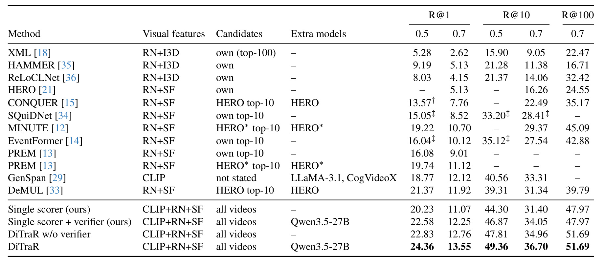
Table 1 的左侧三列比末尾高亮更值得先读。它们给出视觉底座、候选对手从哪里产生，以及在线推理还要调用什么外部模型。早期方法用 ResNet 搭配 I3D 或 SlowFast，DiTraR 的行用 CLIP、ResNet、SlowFast 组合。DeMUL 只在 HERO 选出的十个视频内定位，GenSpan 行的候选来源标作未注明，并用了其他模型做语言分解或候选提示。分数上，默认单路验证首位为 20.23 和 11.07，和不同系统里最强报告值 21.37 与 12.12 接近但还没超过。完整系统报告 24.36 与 13.55，两个阈值分别领先这张对比表里的对应旧值 2.99 与 1.43 个百分点。更深的前百在严阈值为 51.69，对比 DeMUL 报告的 39.79 仍明显更高，不过有两件同时改变。全库搜索可能在更靠后的位置保留大量候选，而新增帧特征和高成本语言核验改变了表示与推理预算。哪一种组件解释相对既有方法的领先不能由跨论文横比识别，原表中没有时间戳数据、候选规模、推理计算与外部语言模型同时匹配的支出对照。反而是本表最后四行在近似一致的库、标注、台阶与视觉底座下，能直接读出是否加入核验或集成分别提升多少。技术选型若强调单卡时延，也应先定位无需外模型的单路或集成结果，再单独权衡冻结语言模型的质量增量。论文为单次分数和公开对照，表内最高并不意味着私有测试或重复训练都能复制同样的差距。严格阈值下 GenSpan 的前十是 33.31，本方法单路 31.40，联合后到 36.70。这行也提醒，未经集成的格点枚举无法仅凭覆盖范围全面压过强对照，提升受每个候选的可比打分质量左右。项目验证尤其需要复用候选来源的记录字段，让同一列数值能回溯到实际索引。
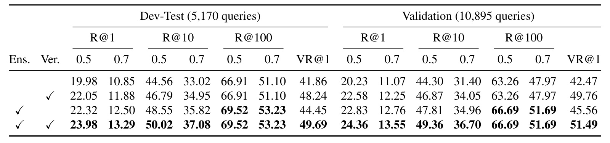
Table 2 保持两种语料各自内部可比。Dev-Test 的第一行 19.98 和 10.85 是小库下的单路基线，对应官方验证的 20.23 和 11.07。只打开字幕时验证首位正确视频率由 42.47 到 49.76，但 IoU 0.5 的首位命中仅到 22.58，按两者相除约有 45.4% 的真视频首位位置合格，比单路约 47.6% 低。字幕往往让更多正确视频排到前面，被提升的视频里首位间隔并不都准。只打开集成时首位正确视频率 45.56，严格视频与时间联合的首位为 22.83 和 12.76，条件定位约 50.1%，同时验证前百召回 63.26 到 66.69、47.97 到 51.69。联合组合首位正确视频率 51.49、联合命中 24.36 和 13.55，条件定位约 47.3%。可以从同一对照推出，联合主要通过更常选对视频增加首位实际命中，尚未进一步提升真视频内首位定位的条件命中。无论以单路还是集成作为输入，打开核验对应的两档前百召回原样保留，这个表中规律来自候选集合固定，和随机运气或语言模型碰巧输出正确时间无关。前十比前百更受重排影响，因此能看见字幕使四路集成的验证前十从 47.81 和 34.96 提到 49.36 和 36.70。若用户目标是让后续候选覆盖最大，集成更直接。若关注展示首条，比较应聚焦两档首位指标及核验额外预算。排名越浅，字幕增量带来的调序越可能改变是否命中。验证宽阈值下单路由前十的 44.30 到前百的 63.26，差 18.96 个百分点，说明大量已有候选尚未挤进用户易看到的位置。联合由 49.36 到 66.69，深浅之间仍有 17.33 个百分点。这个数字也提示有空间继续研究前列候选间的证据竞争，不能从前百稳定直接推断其排名质量稳定。
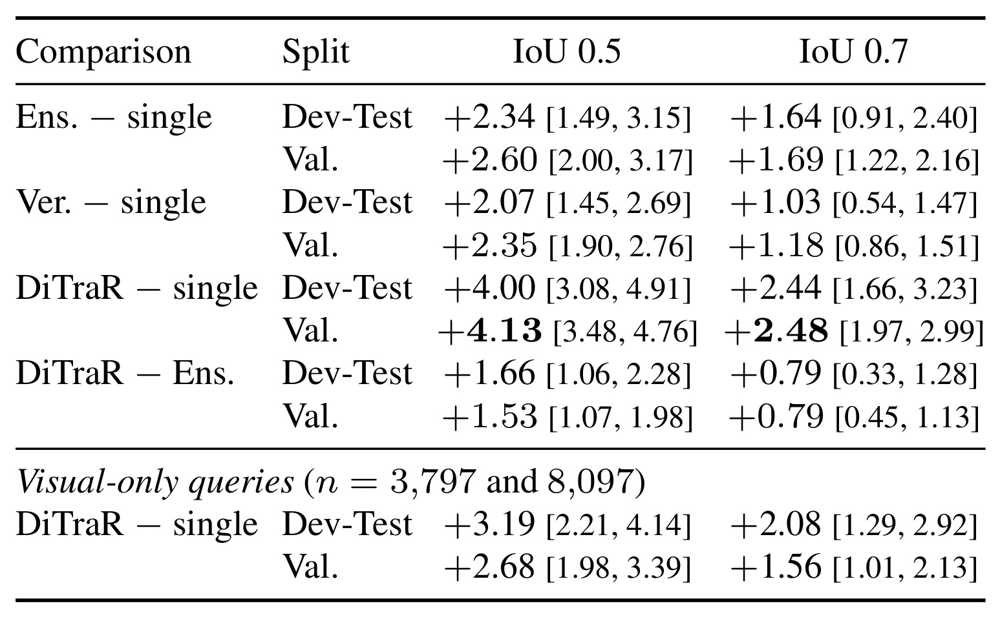
Table 3 用百分点展示同一查询两个模型的结果差值，不把两边单独估计后直接当成独立样本。验证集上只开集成得到两档首位提升 2.60 和 1.69，只开核验为 2.35 和 1.18，联合为 4.13 和 2.48。若完全作用于不相交的错误，简单相加对应 4.95 和 2.87，观察到的联合结果较小。表格能说明收益未完全相加，不能准确回推有多少样本同时被两种方法修好，因为个别查询可能从正确翻到错误。联合相对单路的官方验证区间分别是 3.48 至 4.76 和 1.97 至 2.99，联合相对集成仍有 1.53 和 0.79 个百分点。下方单列视觉切面，官方验证的联合增益在两档为 2.68 和 1.56，二者区间不跨零。这个切面是相对单路的整个组合，不能用于证明只加字幕就让纯画面查询显著改善。抽样选择视频而非单条问句能兼顾同片段及同作品相关查询的依赖，但区间只对应给定训练结果的样本不确定性。表一末尾行仍按单次训练呈现，尤其小增益的绝对幅度可能落在种子波动附近。实际复现时还需至少多种子重新训练，并以原始评估视频身份聚类而非打散查询，以区分数据抽样与工程运行的变异。作者另在 Dev-Test 上得到完整组相对单路增加 4.00 和 2.44 个百分点，方向与官方验证相同。两次评估的候选库不同，适合比较效果方向，无法视作同一联合总体的两次独立重复试验来合并区间。
3.3 成员多样性与模态分层
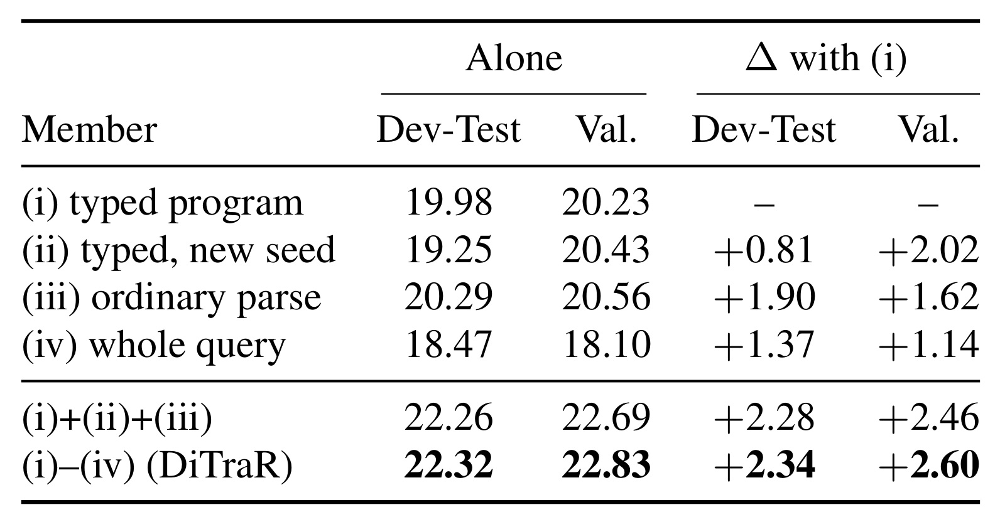
Table 4 左侧分数描述成员单独搜全库，右侧描述该成员和默认成员的能量平均相对默认的变化。比如只看整句在验证是 18.10，低于默认 20.23，但与默认组合后仍增加 1.14 个百分点。两件事同时存在说明单路平均强度和它能纠正哪些误差是不同性质。变种子在 Dev-Test 的成对增量为 0.81，普通解析为 1.90，官方验证上却调换为 2.02 与 1.62。因为最有效的多样性来源随语料变化，不能把默认路线增益单独归给类型探针、句法先验或随机种子。三个成员均值在验证为 22.69，加入整句第四路只再提高到 22.83，增加训练和评分预算后只有 0.14 个百分点。一项配对实验要检查弱成员的加入门槛，不能以单成员分低为理由直接排除，也不能用组合末尾仍正增长推断成员数可以无上限增加。工程上更重要的证据是候选的交集和误报差异，而不是挑最好看的一次种子固定后泛化比较。还可以按同类型查询观察是哪一类短语变化带来互补，分清新增正确候选与重复确认已有候选。
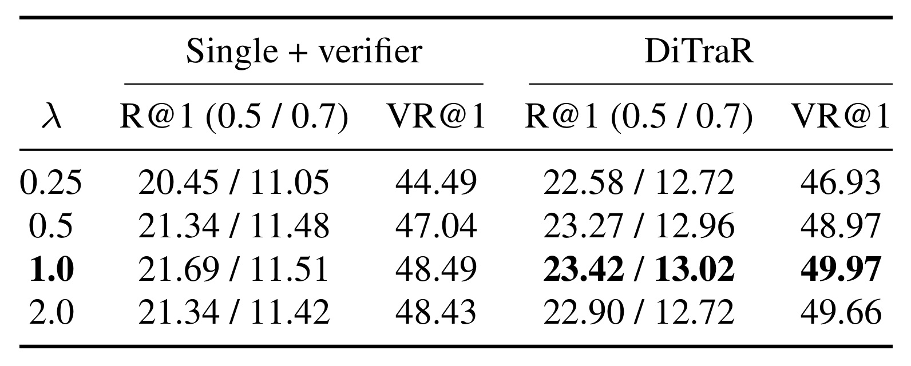
Table 5 在 Dev-Tune 展开四个预先尝试的全局核验权重，左右分别是单路加核验和完整集成加核验。右组首位宽阈值从 22.58、23.27 升到 23.42，再到权重二时落至 22.90。严格阈值也从 13.02 回落到 12.72，正确视频率仍有 49.66，接近系数一的 49.97。左组同样在一附近达到本表最高首位。这种温和回落符合较强文本增量开始压过基础证据差异的解释，但相邻两个权重的单点差值未经随机种子或正式置信区间比较，无法从这个查表得出最优数值只可能是一。作者在组合上取两阈值首位均值确定系数，并在其他数据中固定复用。这个表没有使用测试或官方验证去逐查询重新选择权重，因而保留了评估边界。权重相差八倍时报告指标落在较窄区间，不代表不同字幕质量、说话人标注缺失及外域日志也能沿用同一尺度，证据分布变化后置信度剪切和归一化项会一起影响实际排序幅度。表中报告的是开发阶段一次选择范围，尚未把强度同不同核验模型大小联合调参。
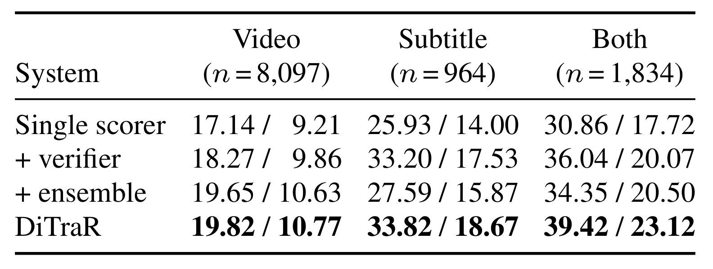
Table 6 给出三组互斥的标注切面，视觉八千零九十七条、字幕九百六十四条、兼有两者一千八百三十四条。字幕组默认首位宽阈值 25.93，只加语言核验到 33.20，只集成到 27.59，组合到 33.82。视觉组则由 17.14 出发，只集成为 19.65，组合为 19.82。字幕和视觉的相对收益梯度与两个组件的可见输入相符。混合组在同一阈值从 30.86 到 39.42，窄阈值从 17.72 到 23.12，说明两类证据在部分混合查询都有作用。各组样本量、初始胜率和模态难度不同，全量结果按样本数加权，不能把三列平均推回主表。原文不用这些标注给模型做推理路由，生产若想按查询是否有对白关系决定是否调用核验，仍需另外构建可用的线上分流信号，并衡量判断错路的损失。视觉组的微小边际增加也没有足够证据宣称字幕有稳定作用，名称里的视觉组描述的是标注类型，并不保证所有该组视频没有字幕。视觉中的部分角色仍可能由字幕提供身份线索。
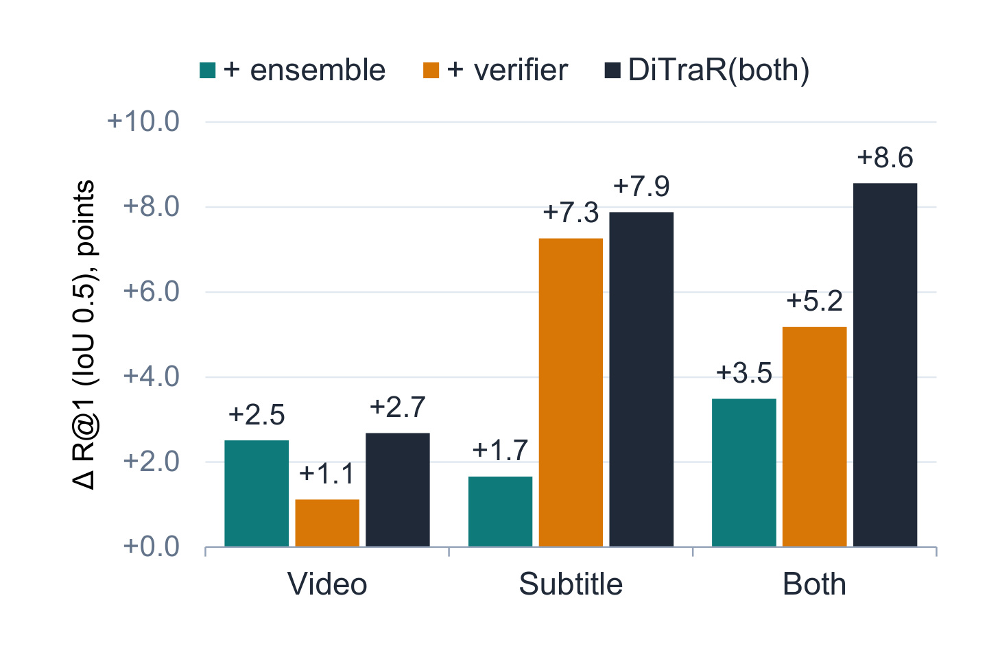
Figure 3 的纵轴是对单路相同类型基线在 IoU 0.5 的百分点差，横轴为三类查询。视觉组青色约 2.5，橙色约 1.1，暗色组合只到约 2.7。从纯集成到组合的精确差是 0.17，区间为负 0.33 至正 0.66。字幕组橙色接近 7.3，暗色接近 7.9。这里不能用两根橙色与青色柱的和去算暗色，联合干预可能纠正同一条查询，也可能因为更新候选导致原有核验不再发生。原文配对计算显示，字幕和混合组里附加到集成上的增量分别为 6.22 和 5.07 个百分点，两者对应区间均为正。和表六结合，这幅图用于解释不同证据的边际角色，同时提示不要把标注组的平均提升迁移到视觉占比或转录覆盖率不同的流量。实际观察的分层最好同时输出查询组占比、各组绝对命中和候选覆盖，以定位总量上升到底来自分流比例变化还是同组能力真的改善。图中柱高按一位小数四舍五入，计算差值和区间时应以作者配对统计及原表精度为准。
3.4 共同区间预算和同源重打分
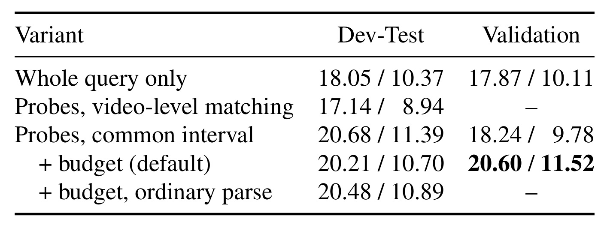
Table 7 采用独立训练运行。开发留出中只读整句的宽阈值首位为 18.05，用多个探针但按整段视频匹配降至 17.14，把这些探针改为围绕共同区间取证升至 20.68。验证集上不带预算的共同区间为 18.24，超整句的 17.87 只有 0.37 个百分点，严格阈值甚至低于整句。预算打开后验证升到 20.60 与 11.52，说明限制短语叠加尤其有助于在独立验证图景里维持性能。开发留出中加预算宽阈值反而由 20.68 降到 20.21，严格也由 11.39 降到 10.70，不能从这里得出所有小库都因为预算变好。原文报告未受预算的全训练更贴合训练查询，作者将其视作潜在过拟合；两个数据集的不同训练损失同时受训练样本规模和分布变化影响，单独的损失数值无法构成证明。还应留意本表默认重新训练一行验证 20.60 与 11.52，主表固定的默认是 20.23 与 11.07，计算消融差分要坚持同表基线。普通解析未在这张消融表给出验证结果，表四另有普通解析成员不同对照。已有实验证明共同区间与预算是重要设计，默认的类型解析规则本身并没有取得稳定的独立优势。
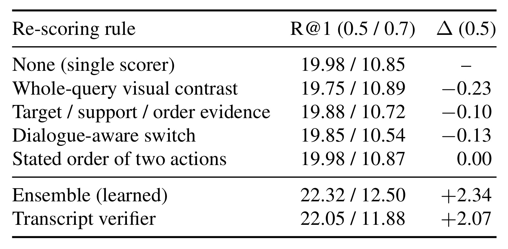
Table 8 在 Dev-Test 用共享候选集合评估四种规则，候选来自百个评分最高的视频，规则用 Dev-Tune 调整。整句在区间内外视觉对比分的宽阈值下降 0.23 个百分点，拆出目标、辅助和顺序证据下降 0.10，按对白切换下降 0.13，按两个动作的叙述顺序重新加分持平。严格阈值上全句对比和动作顺序变化分别为约正 0.04 和正 0.02 个百分点，所以精确说法是四种规则没改善主要宽阈值首位，并且没有可验证的稳定提升。只用顺序规则的适用查询占 3.1%，同一可见证据顺序正反的得分 0.696 对 0.694，提供了片段表示很难分辨极短事件顺序的诊断。在同一表末尾，独立训练集成和完整转录核验是正向参照；它们来自不同证据路径，不能当作与四条同源规则同算力同信息量的完整归因实验。若要验证重打分的上限，需要额外控制视频候选、基础编码时间粒度以及关键词条件生效的人群比例，而非只比较最终被不同系统选中的一列表格。
3.5 可定位上界与测得成本
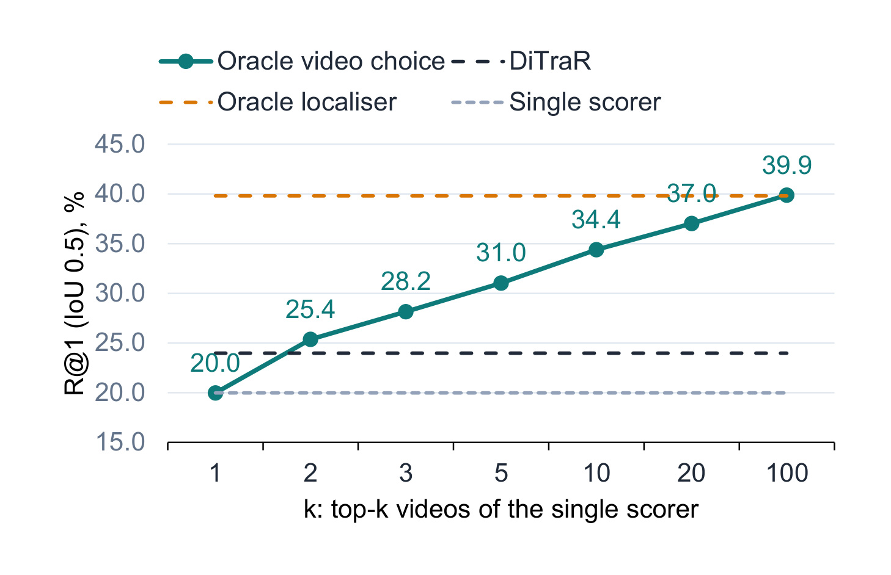
Figure 4 在 Dev-Test 把理想的两种修改画在一张图里。横轴是单路的前若干个视频，不是前若干个时刻。从前二个视频中用真值挑正确者并保留该视频自己的最佳区间，理论宽阈值首位可到 25.4%，前十时是 34.4%，前百时是 39.9%。黑色横虚线大约是联合模型的 24.0%，已经接近理想选前二视频的高度，但该比较不是同候选回放的上界，真实系统使用了集成后候选。橙色线则固定单路的首位视频，用理想定位把原日志里的正确视频位置尽量修好，宽阈值到约 39.8%，原文严阈值的对应值为 35.1%。这是两个不同的假设干预，不能把它们的提高相加成联合可得值。随着前视频范围增加，绿色上界继续上涨，却也伴随更高的核验输入成本。实际系统此时要区分扩大独特视频覆盖的收益与在已选视频内改好首位区间的收益，因为两者分别需要更好的跨视频评分与更精细的时序证据。图中诊断只针对开发留出语料以及基线的候选生成机制，不能把坐标上的上界外推为在线曝光或被用户采纳的概率。
作者在一张 H100 对两千一百七十九个验证视频测到单路检索十七毫秒每查询，每路索引每片段约 4.8 kB。四成员检索低于 0.1 秒每查询，训练代价约是单路四倍。核验统计的是批量离线实验，142,173 对查询与视频在一张 H100 上约 0.48 秒每查询。核验每查询平均关联 13.1 个不同视频。分组上限为每视频八个问题让复用受相同视频被近邻查询重复选中的频率影响。一条线上孤立查询、不同并发度和分布不均的长转录可能让摊销不同。文章没有可用的请求级时延分位数、SLO 条件下的吞吐或大库跨机器成本，因此不能从这几个数值换算在线容量。
4. 总结
4.1 从首位误差分解选择下一步
DiTraR 用一个候选时间区间把实体线索和动作时序收束起来，再使用独立训练评分器改善对那个共同区间的判断。冻结字幕核验加进了一种不同粒度的输入，其主要贡献是改善有对白内容的候选视频次序。把正样本条件拆开之后，联合验证首位改善可以较清楚地追到正确视频率上升，同时正确视频中的条件定位没有同步提高。这一区别足以影响迭代优先级。一个已经具备强时序打分的线上检索系统可以先在影子日志里检验是否反复遗漏相同视频，然后再决定要增加候选覆盖还是直接换区间表征，不应仅因一个总体首位指标提高就替换整条定位路径。
局限集中在四类可验证设置。第一，数据只覆盖 TVR 六部电视剧，重复角色、场景与清晰字幕容易让读者误判迁移到无对话的短视频流量后仍有相同提升。第二，核验模型可能预训练阶段见过 TVR 相关转录，论文没有用自然分布中真正新采集且干净隔离的节目验证排除熟悉度偏差。第三，主结果每个成员单次训练，聚簇置信区间只能描述给定模型在样本上的差异，不能掩盖同配置重复约零点四个百分点的变动，尤其第四成员净增量更小。第四，全文以固定语料规模、离线和单设备估速为主，长视频、低质量转录、并行调度、冷暖缓存与尾延迟的影响仍需独立测量。两条机制都无法直接补上严格时间定位里的失败，前者受特征和候选格点限制，后者只处理原候选的排序。
4.2 可以复核的三个实验
先用同一版特征和共同候选池，做区间约束、探针预算及同种子整句三组固定对照，额外构造「同演员同动作但发生在两个镜头」及「动作顺序交换」样本。分别报正确视频率、正确视频条件的定位命中率与两个阈值下的一致性。这样可以确定故障来自跨时间证据拼接，还是底层特征对顺序本身不敏感。
再把四路评分器的错误交并、相同候选的能量相关及相对于单路新增命中的视频数量列在一起。训练重复至少覆盖多个种子，报两种语料的方差和逐级增益。如果第四路主要改善基础模型在低视觉曝光里的漏召回，可以针对该人群做有代价的影子评估。如果它的观察增量与训练随机性无法区分，则保留较轻的前三路作为严格预算下的复现对照。
最后在更新时段划分的新素材上试运行只看字幕的核验，统计完全缺字幕、自动字幕串帧、说话人标签缺失和多句对白四类切面。既报两阈值首位变化，也报按视频分组后的实际批大小、截断比例和在线尾部时延，在资源固定时复查小语言模型或只核验疑难项的效果。待验证候选身份、候选时间区间和重排后的输出坐标应逐条保存，才能证明收益来自视频身份更准，而非采样或评估入口无意改变了定位规则。